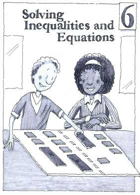

Chapter 6
Solving Inequalities and Equations
Navigation is reserved for this future chapter. Add the chapter source later and these links can become active without changing the textbook structure.
Lessons
- 6 OpeningChapter 6 OpeningFuture unit
- 6.1.1Comparing ExpressionsFuture unit
- 6.1.2Comparing Quantities with VariablesFuture unit
- 6.1.3One Variable InequalitiesFuture unit
- 6.1.4Solving One Variable InequalitiesFuture unit
- 6.2.1Solving EquationsFuture unit
- 6.2.2Checking Solutions and the Distributive PropertyFuture unit
- 6.2.3Solving Equations and Recording WorkFuture unit
- 6.2.4Using a Table to Write Equations from Word ProblemsFuture unit
- 6.2.5Writing and Solving EquationsFuture unit
- 6.2.6Cases With Infinite or No SolutionsFuture unit
- 6.2.7Choosing A Solving StrategyFuture unit
- 6 ClosureChapter 6 ClosureFuture unit